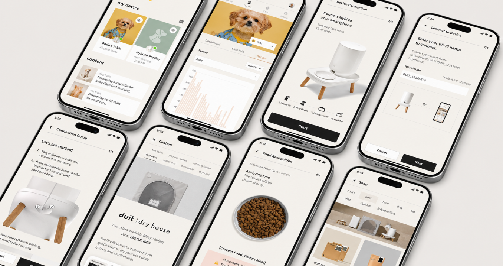

DDuit Design Lab · Duit The Table · Pet Care IoT
Helping pet owners manage daily feeding through a connected app.
Duit The Table links a connected pet-care device with mobile controls, helping guardians manage feeding routines and device interaction from the app.

Overview
Duit The Table was a mobile app project connected to an IoT pet-care device. Duit's brand context centers on connecting people and pets, and The Table sits in the connected feeding-device experience.
My responsibility was design management. The case study will focus on how the app supports device-linked controls, everyday feeding routines, and a mobile experience that helps guardians care for pets through connected hardware.
| Area | Scope |
|---|---|
| Client | Duit Design Lab |
| Product | Duit The Table IoT-connected mobile app |
| Role | Design Manager, IoT UX, Mobile UX |
| Service focus | IoT device connection, mobile controls, feeding routines, pet-care interactions, and device-linked app experience |